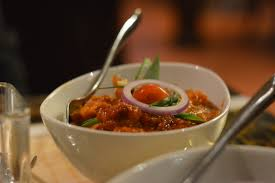

Chicken Thadka

This is my favourite grill one.
Essentials:
- Three lbs chicken breasts
- six table spoons of vegetable oil
- One table spoon chili powder
- One table spoon ground cumin
- Half table spoon cayenne pepper
- One and Half cups tomato sauce
- Two cups cream
- salt & pepper
- One yellow onion
- Three garlic cloves
- Three table spoon garam masala
- One table spoon fresh grated ginger
- naan & rice for serving
- lime & cilantro, for garnish
Procedure:
- Boil two table spoons of vegetable oil in a large skillet over medium-high heat,fry the pieces of the chicken so each side is browned. They do not need to be fully cooked all the way through. Work in batches, and set aside when you’re done.
- Melt another 2 table spoons of vegetable oil in the pan over medium heat. Add the onion, and cook until beginning to soften — about three minutes. Add the garlic, garam masala, ginger, chili powder, cumin, and cayenne. Stir to combine, and cook for about 45 seconds before adding the tomato sauce.
- Bring the mixture to a simmer and let cook for five minutes before adding the cream. Bring the mixture back to a simmer, add the browned chicken, and let simmer for 10-15 minutes. Keep the heat low here — not a rolling boil.
- Stir in the remaining 2 table spoons of butter, and season with salt and pepper, to taste.
- Serve garnished with lime and coriander leaves.